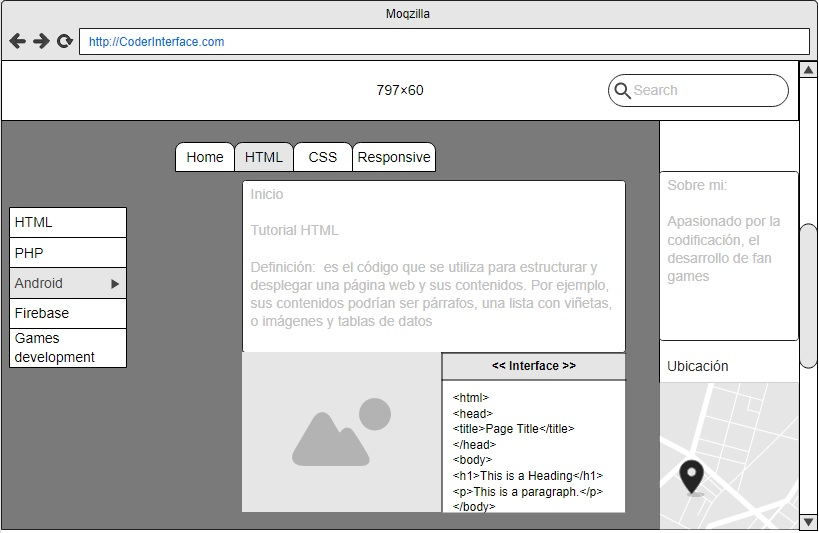

Propósito del Sitio
Por este medio se crea una interfaz web donde se refleja el contenido de esta usando el lenguaje de programación HTML con el Framework CSS para diseños elegantes y dinámicos.
CSS (hojas de estilo en cascada)
CSS son las siglas en inglés para «hojas de estilo en cascada» (Cascading Style Sheets). Básicamente, es un lenguaje que maneja el diseño y presentación de las páginas web, es decir, cómo lucen cuando un usuario las visita. Funciona junto con el lenguaje HTML que se encarga del contenido básico de las páginas.
¿Para que sirve CSS?
Con CSS puedes crear reglas para decirle a tu sitio web cómo quieres mostrar la información y puedes guardar los comandos para elementos de estilo (como fuentes, colores, tamaños, etc.) separados de los que configuran el contenido.
¿Como usar CSS?
Escribe reglas para la apariencia de tu sitio
En lugar de hacer un listado del contenido de la página, CSS utiliza las reglas asignadas a elementos HTML, un documento HTML completo o varios de ellos. Estas reglas son procesadas por el navegador web cuando carga el archivo HTML.
Una regla se luce asi

Conoce los componentes de la regla
Selector CSS
Todas las reglas CSS comienzan con un selector. Este indica la parte del documento donde se aplica la regla. Y al selector le siguen una o más declaraciones dentro de corchetes. Existen varias formas de escribir un selector; el más básico es el que viste en el ejemplo de arriba: cada elemento HTML a modificar se menciona por su nombre (p, div, a, etc.):

Pero también puedes señalar los elementos por su clase o atributo. La clase de selector está escrito como un punto (.) seguido del nombre de la clase. La identidad del selector se escribe con una almohadilla (#), seguida del nombre de identidad

Y si deseas asignar la misma regla a múltiples elementos, puedes hacerlo con el selector en grupo. Este abarca dos o más nombres de elementos separados por comas. El orden no es importante, pues la regla se aplicará a todos los elementos que se enumeren:

FrameWork CSS
El hecho de usar un Framework CSS no significa que no necesitas saber CSS, esto es erróneo, para poder manipular un Framework CSS debes conocer los conceptos iniciales de CSS
Antes que existieran los Frameworks CSS, los Desarrolladores solían pasar mucho tiempo creando interfaces visuales con CSS manualmente, pero gracias a los Frameworks CSS, ahora se pueden crear de manera rápida y efectiva aplicaciones Web profesionales.
Se mostrara los 3 FrameWorks mas usados
Tailwind CSS
Este Framework es muy personalizable, te permite crear una interfaz de usuario única, te permite jugar con los colores, tamaños de borde, tamaño de la fuente, paddings, margenes, sombras y otros elementos y propiedades.
Web
Link Tailwind
Bootstrap
Este Framework es uno de los más populares en la actualidad, hasta la fecha de este Post se encuentra en su versión 4.4.1, cuenta con características muy importantes como esquemas de color, modificadores, clases útiles para usar formularios, cards, listas, tablas, videos, carrusel, ventanas modales, tooltips, etc.
Web
Link Bootstrap
Pure CSS
A diferencia de Bootstrap, no permite crear diseños fijos y es muy ligero, pesa alrededor de 3.5 Kb solamente cuando se comprime y se minimiza. Este Framework cuenta con menús verticales, horizontales y desplegables, asimismo con formularios, botones, tablas, etc.
Web
Link Pure CSS
Mapeo Mockup
En el desarrollo de la maqueta Mockup, se tomara en cuenta para futuras actividades por venir, dependiendo si es viable aunque se realize cambios que alteren el diseño de la maqueta.